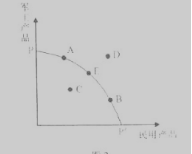
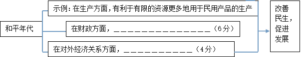

第一课 生活在人民当家作主的国家
一、选择题
1．（2015上海）中共中央总书记、国家主席、中央军委主席习近平在庆祝“五一”国际劳动节暨表彰全国劳动模范和先进工作者大会上指出，我国工人阶级地位和作用都不容动摇，不容忽视。这是因为工人阶级是我们国家的( )
A.阶级基础 B.坚强柱石 C.领导阶级 D.政治保证
2．结合现代民主国家的特征，下列对漫画的理解正确的是( )。

A.在人民当家作主的国家，要反对专制
B.要做人民群众的“霸王”，才能够真正为人民服务
C.让人民群众成为“霸王”，直接管理国家和社会事务
D.民主要适度，不能走极端
3.《中华人民共和国宪法》第41条规定：“中华人民共和国公民对于任何国家机关和国家工作人员，有提出批评和建议的权利。”宪法赋予公民监督权的根本原因是（ ）
A.我国是人民当家作主的社会主义国家 B.监督权是公民的基本政治权利
C.人民民主是社会主义的生命和基石 D.人民民主具有广泛性和真实性
4．“十二五”期间，我国城乡居民可支配收入年均增长约7.9%，城乡差距逐渐缩小，年均解决1000万人以上的新增就业，实现9年义务教育全覆盖，初步形成世界上规模最大的全民医保体系和社会保障制度……中国人民千百年来“学有所教、劳有所得、病有所医、老有所养”的愿望正在成为现实。这表明
①我国人民在经济社会发展中的获得感日益增强 ②我国社会主义民主的主体更加广泛
③我国公民平等享有权利的物质保障更加有力 ④我国公民享有的民主权利不断扩大
A.①② B.①③ C.②④ D.③④
5．网络空间是亿万民众共同的精神家园，维护互联网的良好秩序是广大民众的共同心声。第十二届全国人大常委会第十五次会议初次审议了《中华人民共和国网络安全法（草案）》，而后该草案在中国人大网公布，向社会公众征求意见。这表明：（ ）
A.依法治国与依法执政是统一的 B.政府决策能够反映民意、集中民智
C.社会主义民主具有广泛性和真实性 D.公民通过社会公示制度参与民主监督
6．根据我国宪法规定，公民依法享有选举权和被选举权。以下行使这一权利的是( )
A.团员选举团支部书记 B.村民选举村委会成员 C.工人选举职代会代 D.选民选举区人大代表
7．在对外交往中，每一个中国人的言行举止不仅表达了我们的公民素质，也展示着我们的国家形象。从这个意义上说，每个人都可能是一个“外交官”。为了做好“外交官”，我们应该( )
①树立国家观念，自觉维护国家的荣誉和利益 ②增强公民意识，自觉遵守宪法和法律
③主动参政议政 ④增强民族自信心和民族优越感
A.①② B.①③ C.①④ D.②④
8．《中共中央关于全面推进依法治国若干重大问题的决定》强调，“法律的权威源自人民的内心拥护和真诚信仰。人民权益要靠法律保障，法律权威要靠人民维护。”这意味着（ ）
①法律要代表公民的意志 ② 法律要造福人民和依靠人民
③政府要坚持依法治国与以德治国相结合 ④公民要树立权利与义务相统一的法治意识
A.①② B.①③ C.③④ D.②④
9．泼粪、鸣枪、放藏獒……为对抗广场舞，各地奇招频出。浙江温州市区新国光商住广场业主不堪广场舞之扰，在多次交涉无果后，花26万元买来“高音炮”和广场舞音乐同时播放，“以噪制噪”，广场舞大妈被“请遵守中华人民共和国环境噪声污染防治法，立即停止违法行为！”的警告声逼退。这启示我们 ( )
①要在法制的轨道上行使自己的权利 ②公民的权利和义务都是神圣不可侵犯的
③公民权利的行使不得损害其他公民的合法权益④要用法律的手段维护公民的一切利益
A.①② B.②④ C.①③ D.③④
10.有些人既要求环境整洁又反对在自己小区附近建垃圾站，既要求手机信号总满格又不允
许在自家附近设通信基站。近年来，有的公共项目一遇到公众反对就流产的事件。破解
这种困局，需要（ ）
①政府提升服务能力，协调各方利益②政府维护公民利益，兼顾公共利益
③公民将个人利益和公共利益相结合④公民以各种方式维护自身合法权益
A.①② B.③④ C.①③ D.②④
二、非选择题
11．(2015重庆)今年世界反法西斯战争暨中国人民抗日战争胜利70周年。阅读材料，回答问题
材料一 中国是世界反法西斯战争的主要参战国。面对外敌的入侵，中国人民浴血奋战，消灭并牵制了日本侵略者大量兵力，不仅保卫了国家，而且为二战的最终胜利做出重大贡献。
今天的中国，已经成为一个具有保卫人民和平生活坚强能力的伟大国家，中华民族任人宰割、饱受欺凌的时代一去不复返了。2014年，我国通过立法确定中国人民抗日战争胜利纪念日、烈士纪念日、南京大屠杀死难者国家公祭日，并隆重纪念活动，以此铭记一切为国家、为民族、为和平付出宝贵生命的人们。
材料二 在一般情况下，战争能改变社会生产的产出组合。图2中曲线PP’反映了在一定时期内将所有要素投入社会生产所形成的最大产出组合。曲线内（曲线与坐标轴围成的扇形区域）的点是生产要素没有得到充分利用的产出组合，曲线外的点是利用现有要素无法达到的产出组合。[来源:Zxxk.Com]
（1）运用《政治生活》知识，结合材料一说明我国国家与公民之间的关系。（12分）
（2）在生产要素总量一定的前提下，若某个处于战争状态的国家生产处于E点（见图2），战争结束后，其产出组合最有可能由E点向＿＿＿（A、B、C、D）方向移动。（4分）
（3）和平是经济社会繁荣发展的基础。相比战争年代，和平年代在生产、财政与对外关系等方面能为经济发展提供更好条件、更多机会。运用《经济生活》知识，完成图3.（10分）

第一课 生活在人民当家作主的国家
一、选择题
1-5 CAABC 6-10 DADCC
二、非选择题
11．（1）①公民具有维护国家利益的义务，面对外敌入侵，公民维护国家安全、荣誉和利益，为国家的繁荣强大做出自己应有的贡献；②国家具有保护公民权益的职责，国家维护公民生命、自由等权利，为公民生活与发展提供和平环境，增强国民的爱国主义情感。③在我国，国家与公民的个人利益在根本上是一致的。
（2）B
（3）①在财政方面，有利于促进财政收入的稳定增长，有利于将财政资金更多的用于发展民生经济；②在对外经济关系方面，有利于加强国际经济合作，有利于融入经济全球化。